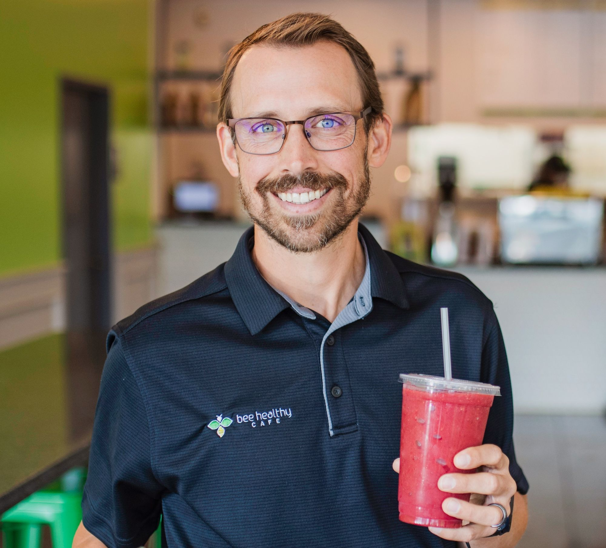
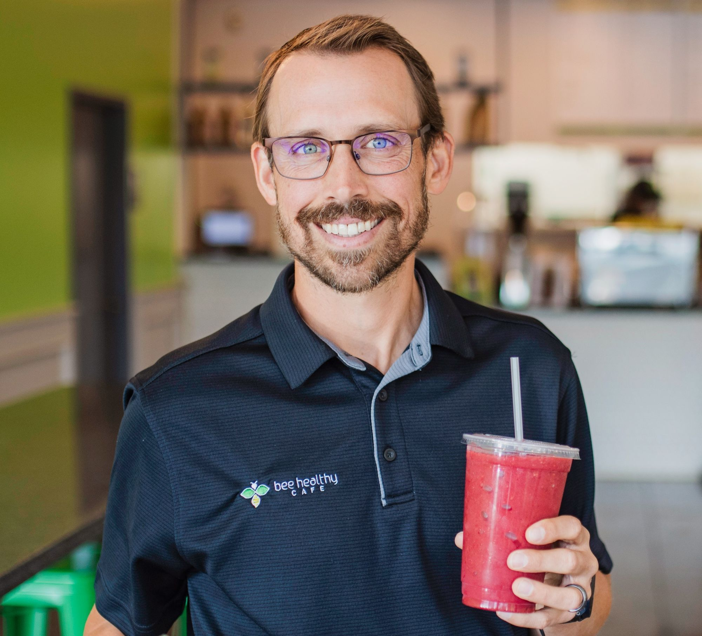

Welcome to Cafe De Peshawar
Enjoy the finest cuisine and coffee in town! We take pride in serving you the best.
Get in Touch With Us
About Cafe de Peshawar
Welcome to Cafe de Peshawar, where culture, tradition, and the love for coffee converge to create a unique experience. Nestled in the heart of Peshawar, our cafe is a haven for coffee enthusiasts and those seeking a taste of the region's rich flavors.
Our Story
Cafe de Peshawar is more than just a coffee shop; it's a journey that began with a passion for bringing the finest brews and culinary delights to the city. Founded by a group of friends who share a deep connection to Peshawar's heritage, we set out to create a place where you can savor the essence of our beloved city.
Our Coffee
We take great pride in our coffee, sourcing only the best beans from local growers and around the world. From aromatic Peshawari Chai to the bold flavors of our Peshawari Roast, every cup tells a story of our commitment to quality and authenticity.
The Peshawar Experience
Step into Cafe de Peshawar, and you'll be transported to a world that encapsulates the warmth of Pashtun hospitality. Our cozy ambience, adorned with traditional motifs and artwork, is designed to reflect the rich cultural heritage of this region.
Our Menu
Beyond coffee, our menu features a delightful array of local and international dishes. From sumptuous kababs to aromatic Pulao, our cuisine is a fusion of flavors that pays homage to the culinary diversity of Peshawar.
Community and Culture
At Cafe de Peshawar, we are not just a cafe; we are an integral part of the community. We host events that celebrate our culture, from poetry recitations to live music performances, providing a space for artists and storytellers to shine.
Visit Us
Whether you're a resident of Peshawar or a traveler seeking a taste of the city's essence, Cafe de Peshawar invites you to embark on a sensory journey like no other. Come, join us for a cup of tradition, and let the stories of Peshawar unfold in every sip.
We look forward to sharing moments and creating memories with you at Cafe de Peshawar.


 
